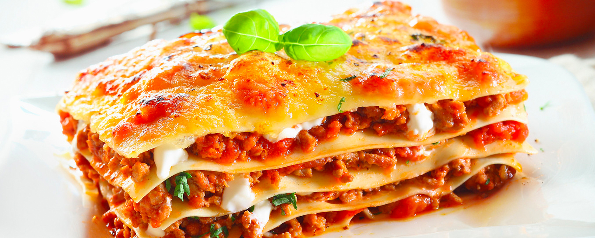

Freshly baked lasagna with melted cheese topping.
Recipe Information
Prep Time: 25 minutes
Cook Time: 45 minutes
Servings: 6–8
Difficulty: Intermediate
Ingredients
- 12 lasagna noodles
- 1 lb ground beef
- 2 cups ricotta cheese
- 3 cups shredded mozzarella cheese
- 2 cups marinara sauce
- 1/2 cup grated Parmesan cheese
- 2 tbsp olive oil
- 1 tsp dried oregano
Instructions
- Preheat oven to 375°F (190°C).
- Boil lasagna noodles according to package directions; drain and set aside.
- Heat olive oil in a pan, cook ground beef until browned. Stir in marinara sauce and oregano.
- In a baking dish, layer noodles, meat sauce, ricotta, and mozzarella. Repeat layers.
- Top with Parmesan cheese and bake for 40–45 minutes until bubbly and golden.
Tips & Notes
Let the lasagna rest for at least 10 minutes before slicing.
For extra flavor, add fresh basil or spinach between the layers.
Nutrition Facts (per serving)
- Calories: ~450
- Protein: 28g
- Carbohydrates: 35g
- Fat: 20g